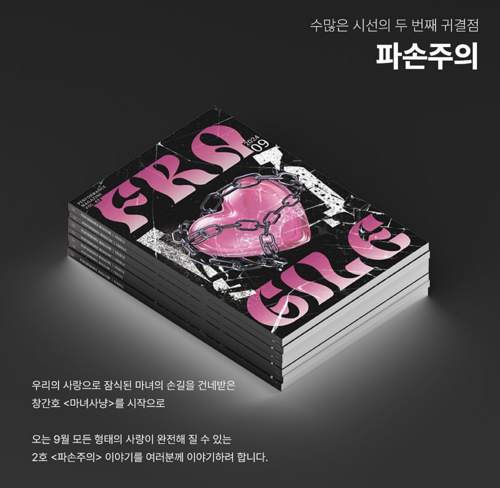
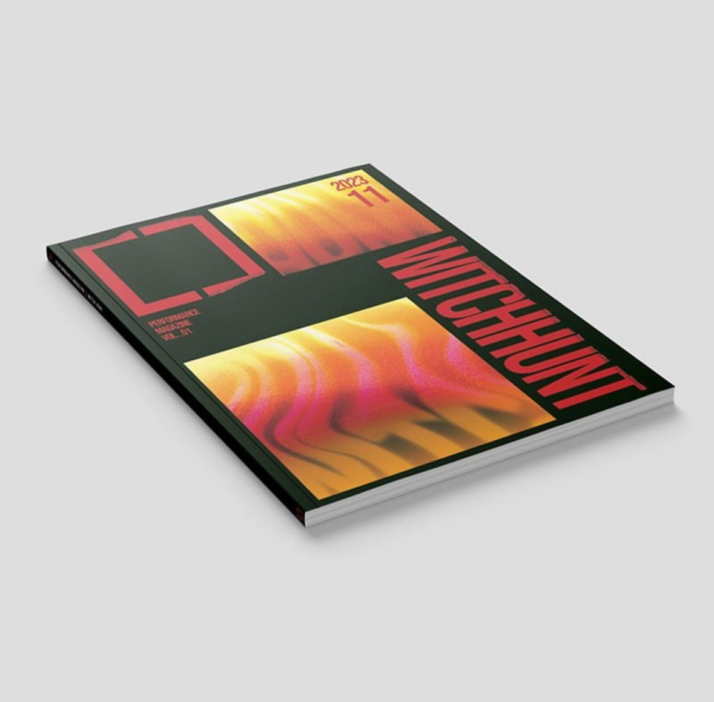

“그녀의 삶은 파손되었다”
엘리자벳. 오스트리아 제국의 황후이자 헝가리 왕국의 왕비. ‘시씨(Sissi)’라는 별명으로도 알려져 있다. 그녀의 삶은 곧 깨질 것 같이 위태로웠다. 불안정했던 그녀의 인생을 고스란히 담고 있는 뮤지컬 <엘리자벳>을 통해 바라본 그녀의 삶은 관객으로 하여금 깊은 연민을 느끼게 하기 충분했다. 비극적이고도 아름다웠던 그녀에게 ‘파손 주의’ 스티커를 붙여주고 싶다. 그녀가 다치지 않았으면 하는, 그녀를 소중히 생각하는 나의 마음을 담아.

악한 자, 넌 위키드
<위키드>. ‘마녀’하면 가장 먼저 떠오르는 뮤지컬이 아닐까. 이 작품은 모두가 한 번쯤 읽어봤을 『오즈의 마법사』에 등장하는 서쪽 마녀에 대한 이야기를 담고 있다. 초록 피부를 가진 서쪽 마녀는 날개 달린 황금 원숭이를 부리며 사악한 짓을 일삼는다. 뮤지컬 <위키드>는 이 초록 마녀 ‘엘파바’가 사실 사악한 마녀가 아니라, 마녀사냥의 희생양이었다는 반전을 담고 있다.
뮤지컬 <위키드>는 소설이 원작인 만큼 스토리 라인이 탄탄하고 서사에서 주는 감동이 큰 작품이라고 생각한다. 극의 서두에는 도대체 하고자 하는 이야기가 무엇인지, 등장인물의 관계성은 어떻게 되는 것인지 이해가 잘 되지 않을 수 있다. 그러나 극의 말미에 이르러 우리는 작품을 이해하고 감동까지 느낄 수 있다. 이 글로 말미암아 서사의 흐름을 천천히 따라가며 <위키드>가 어떤 이야기를 담고 있는지, ‘마녀’ 혹은 ‘마녀사냥’을 소재로 어떤 이야기를 하고 싶은 것인지 이해하고 내가 작품을 감상하면서 느꼈던 감동까지 독자와 함께 나누고 싶다.